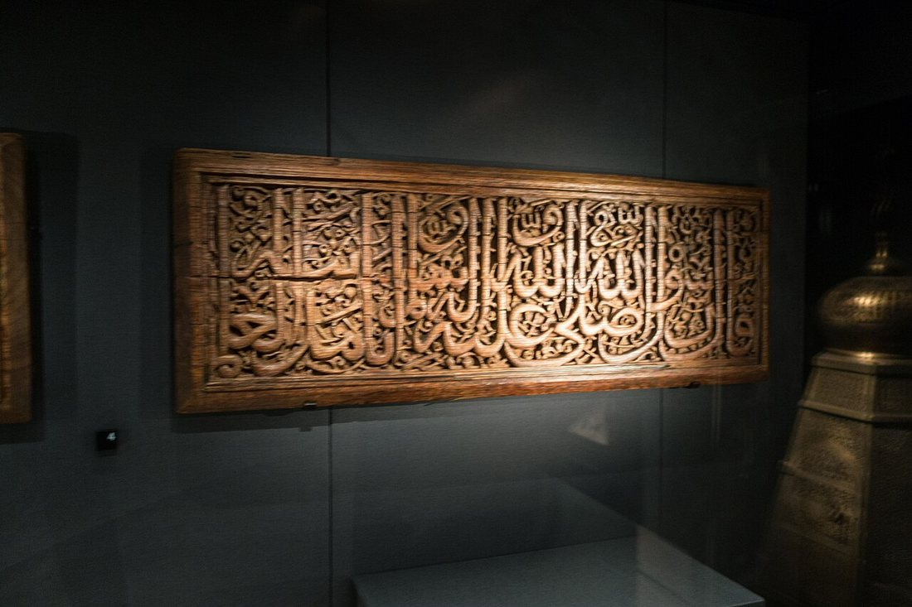
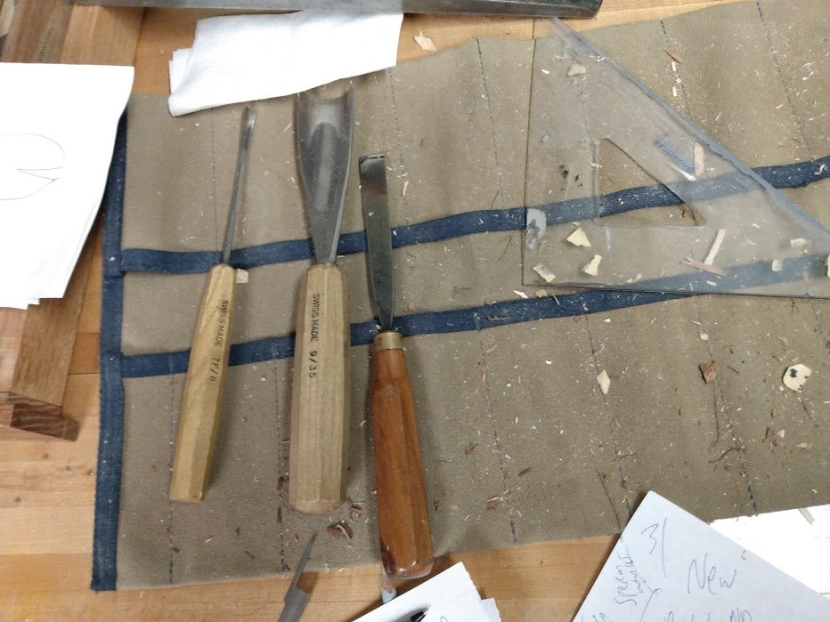
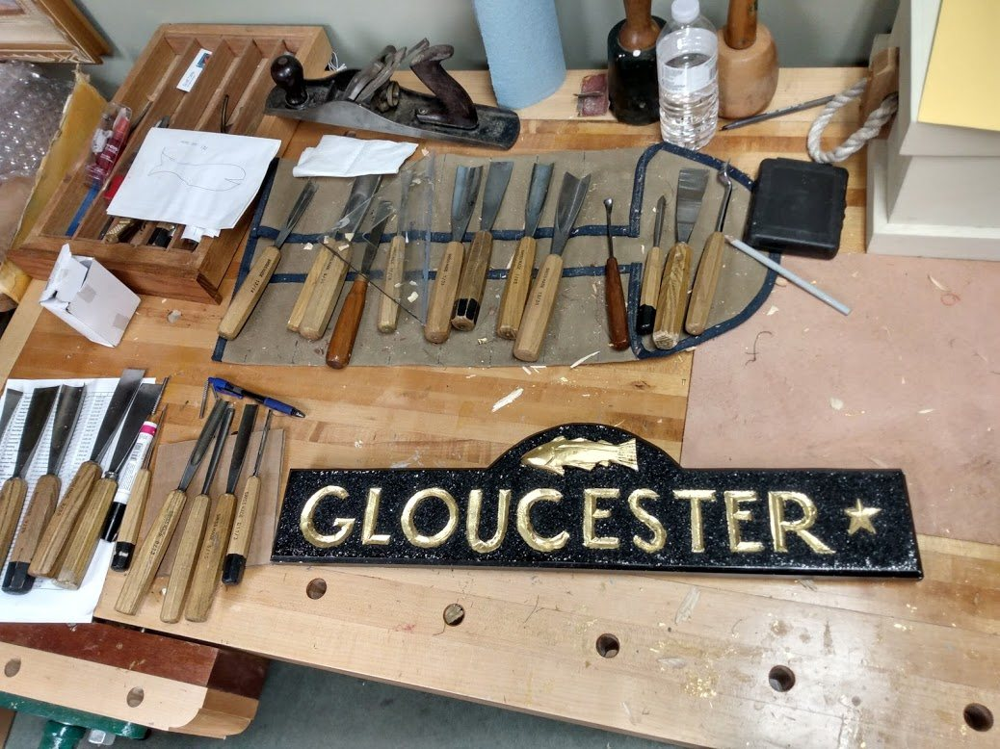
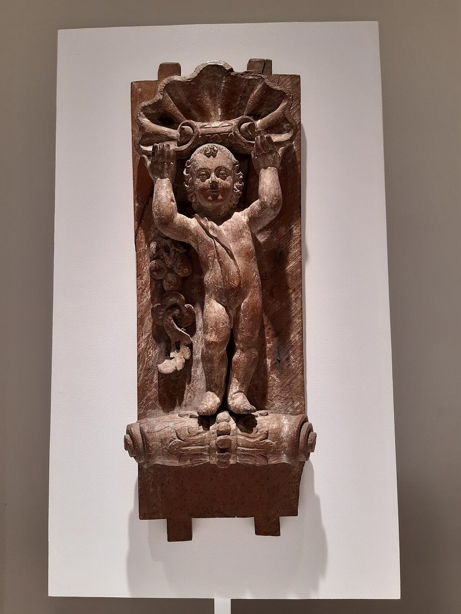
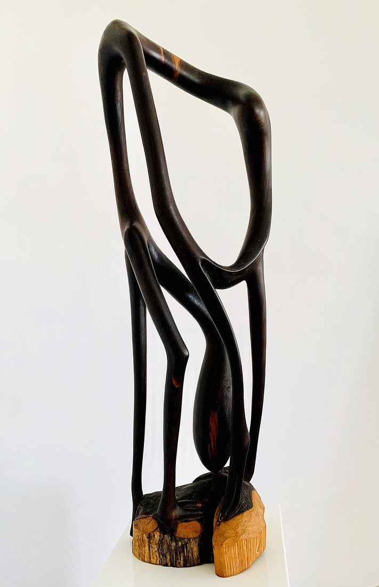

Көркем еңбек (ұлдар) · 2-бөлім · Ағаш өңдеу Art & Craft (Boys) · Section 2 · Woodworking Художественный труд (мальчики) · Раздел 2 · Обработка древесины
🪵 Ағашқа көркем ою салу
🪵 Artistic Wood Carving
🪵 Художественная резьба по дереву
Кескіш пен қашаудың көмегімен ағаш бетіне ою-өрнек пен мүсін салу өнері. The art of cutting ornament and form into wood with a knife and gouge. Искусство создавать узор и форму в дереве с помощью ножа и стамески.
Ағаш — шебердің тірі материалы Wood — the Craftsman's Living Material Дерево — живой материал мастера
Көркем ою (резьба по дереву) — ағаш бетінен артық бөліктерді кесіп алып тастау арқылы ою-өрнек, сурет немесе мүсін шығаратын ежелгі қолөнер. Бұл — қосып емес, алып тастап жасайтын өнер: шебер ағаштың ішіне «жасырылған» бейнені көріп, басы артық жоңқаны ғана түсіреді. Тас пен металдан айырмашылығы, ағаш жұмсақ, жылы әрі талшықты болғандықтан, кескішке оңай беріледі — сондықтан адамзат тарихындағы ең көне қолөнердің бірі. Wood carving is an ancient craft in which ornament, a picture or a sculpture is created by cutting away the excess from a piece of wood. It is a subtractive art — not adding, but removing: the carver sees the image "hidden" in the timber and takes off only the surplus chips. Unlike stone or metal, wood is soft, warm and fibrous, so it yields easily to the blade — which is why carving is one of the oldest crafts in human history. Художественная резьба по дереву — древнее ремесло, в котором узор, рисунок или скульптуру создают, срезая лишнее с куска древесины. Это «вычитающее» искусство — не прибавляют, а убирают: мастер видит «спрятанный» в дереве образ и снимает лишь ненужную стружку. В отличие от камня и металла дерево мягкое, тёплое и волокнистое, поэтому легко поддаётся резцу — оттого резьба и стала одним из самых древних ремёсел человечества.
Әр халықтың өз ою-өрнегі бар: қазақта «қошқар мүйіз», орыста «глухая» қарапайым ою, шығыста майда торлы өрнек. Шебер ағаштың талшығын (текстура) ескеруі шарт — талшық бойымен кескен жұмсақ, ал қарсы кескен морт болады. Every nation has its own ornament: the Kazakh "ram's horn", the deep flat carving of the Russian north, the fine lattice of the East. The carver must always respect the grain of the wood — a cut along the grain is smooth, while a cut against it tears and crumbles. У каждого народа свой орнамент: казахский «бараний рог», глухая плоскорельефная резьба русского Севера, тонкая решётка Востока. Мастер обязан учитывать волокно (текстуру) дерева — рез вдоль волокна гладкий, а против волокна — рвущийся и хрупкий.

🔍 Рельефті ою-өрнек панелі🔍 Relief ornamental panel🔍 Рельефная орнаментальная панель
Ою салудың негізгі түрлері The Main Kinds of Carving Основные виды резьбы
Тереңдігі мен мақсатына қарай ою бірнеше түрге бөлінеді. By depth and purpose, carving is divided into several kinds. По глубине и назначению резьбу делят на несколько видов.
Геометриялық ою Geometric (chip) carving Геометрическая резьба
Үшбұрыш, ромб, дөңгелек сияқты қарапайым шұңқырлардан тұратын ою. Тек пышақпен орындалады, бастаушыларға ыңғайлы. «Жоңқа алу» (трёхгранная) — ең көп тараған түрі. A pattern built from simple cut-out hollows — triangles, rhombi, circles. Done with a knife alone, it is ideal for beginners. The three-sided "chip" cut is the most common type. Узор из простых выемок — треугольников, ромбов, кругов. Выполняется одним ножом, удобна новичкам. Самый распространённый приём — трёхгранно-выемчатая («чип») резьба.
Рельефті ою Relief carving Рельефная резьба
Сурет фоннан биіктеп тұрады: фон ойылып, бейне көтеріледі. Аласа (барельеф) және биік (горельеф) болады. Қашау мен пышақ қажет. The image stands out above the background: the ground is lowered and the figure is raised. It may be low (bas-relief) or high (high-relief). Needs gouges as well as a knife. Изображение выступает над фоном: фон выбирают, а рисунок остаётся выше. Бывает низкой (барельеф) и высокой (горельеф). Нужны стамески и нож.
Көлемді (мүсіндік) ою In-the-round (sculptural) Объёмная (скульптурная)
Бұйым жан-жағынан толық ойылады — нағыз ағаш мүсін. Барлық жағынан көруге болады. Ең күрделі әрі шеберлікті қажет ететін түрі. The piece is carved fully on every side — a true wooden sculpture that can be viewed from all around. The most complex kind, demanding real skill. Изделие вырезают со всех сторон — настоящая деревянная скульптура, которую видно кругом. Самый сложный вид, требующий настоящего мастерства.

🔍 Жұмыс үстеліндегі ою кескіштері🔍 Carving tools on the workbench🔍 Резчицкие инструменты на верстаке
Шебердің құрал-саймандары The Carver's Tools Инструменты резчика
Косяк-пышақSkew knife (kosyak)Нож-косяк
Қиғаш жүзді пышақ — геометриялық ою үшін негізгі сайман.An angled-blade knife — the main tool for geometric carving.Нож со скошенным лезвием — главный для геометрической резьбы.
Қашау (жартылай дөңгелек)GougeСтамеска-полукруглая
Иілген жүзімен ойыс сызықтар мен фон ойуға арналған.Its curved edge cuts hollow lines and clears the background.Изогнутым лезвием режут вогнутые линии и выбирают фон.
Тегіс қашауFlat chiselПлоская стамеска
Жазық беттерді тазалап, шетін түзетеді.Cleans flat surfaces and trims the edges.Зачищает плоские поверхности и подравнивает края.
Клюкарза, киянкаBent gouge & malletКлюкарза, киянка
Иілген сапты қашау терең жерге жетеді; киянка — ағаш балға.A bent-shank gouge reaches deep recesses; a mallet is a wooden hammer.Изогнутая стамеска достаёт глубокие места; киянка — деревянный молоток.
Ең бастысы — өткір сайман. Доғал кескіш ағашты жыртады әрі сырғып кетіп, қол жаралайды. Кескішті қайрақ пен былғары белдікте үнемі қайрап тұру керек.The most important thing is a sharp tool. A blunt blade tears the wood and slips, cutting the hand. Tools must be constantly honed on a stone and a leather strop.Самое главное — острый инструмент. Тупой резец рвёт дерево и соскальзывает, ранит руку. Инструмент нужно постоянно править на бруске и кожаном ремне.
Ою салу жолы: 5 қадам How a Carving Is Made: 5 Steps Как создаётся резьба: 5 шагов
Эскизден дайын бұйымға дейін. From the sketch to the finished piece. От эскиза до готового изделия.
Эскиз бен материал.Sketch & material.Эскиз и материал. Өрнекті қағазға салып, кепкен, түйінсіз жұмсақ ағашты (жөке, қайың, емен) таңдайды.The pattern is drawn on paper, and dry, knot-free softwood (lime, birch, oak) is chosen.Узор рисуют на бумаге и выбирают сухую древесину без сучков (липа, берёза, дуб).
Өрнекті көшіру.Transfer the design.Перенос рисунка. Көшірме қағазбен (калька) суретті тегістелген ағаш бетіне түсіреді.The drawing is copied onto the planed wood surface with carbon/tracing paper.Рисунок переводят на оструганную поверхность копировальной бумагой (калькой).
Контурды кесу (надрезка).Cutting the outline.Надрезка контура. Пышақпен өрнектің шетін тігінен кеседі — бұл «бекіту» сызығы.With a knife the outline is cut vertically — this is the "stop" line.Ножом прорезают контур узора вертикально — это «стопорная» линия.
Жоңқа алу (подрезка).Removing the chips.Подрезка (выборка). Қашаумен талшық бойымен жоңқаны алып, ою тереңдетіледі. Әрқашан өзіңнен әрі қарай кес.With a gouge the chips are removed along the grain and the carving is deepened. Always cut away from yourself.Стамеской снимают стружку вдоль волокна и углубляют резьбу. Режут всегда от себя.
Тазалау, әрлеу.Cleaning & finishing.Зачистка и отделка. Беті егеу-қағазбен тазаланып, маймен немесе лакпен сүртіледі — ағаш текстурасы ашылады.The surface is sanded and rubbed with oil or lacquer — the wood's texture comes alive.Поверхность шлифуют и покрывают маслом или лаком — проявляется текстура дерева.

🔍 Верстак: реттелген кескіштер мен дайын бұйым🔍 The bench: ordered tools and a finished piece🔍 Верстак: разложенные инструменты и готовое изделие
Ою түрлерін салыстыру Comparing the Kinds of Carving Сравнение видов резьбы
Қай түр қандай саймен, қандай қиындықпен орындалады. Which kind uses which tools, and how hard it is. Какой вид какими инструментами и с какой сложностью выполняется.
| Признак | ▱ Геометрическая | ◨ Рельефная | 🗿 Объёмная |
|---|---|---|---|
| Что получаем | Узор из выемок на ровной поверхности. | Изображение, выступающее над выбранным фоном. | Скульптуру, обработанную со всех сторон. |
| Инструмент | В основном нож-косяк. | Стамески, клюкарзы, нож, киянка. | Весь набор + рашпили, рифлёвки. |
| Сложность | Начальная — для школьника. | Средняя — нужна точность. | Высокая — мастерство и опыт. |
| Пример | Разделочная доска, шкатулка. | Панно, наличник, иконостас. | Фигурка, ложка-скульптура. |
| Белгісі | ▱ Геометриялық | ◨ Рельефті | 🗿 Көлемді |
|---|---|---|---|
| Нәтижесі | Тегіс бетте шұңқырлы ою. | Фоннан биіктеп тұрған бейне. | Жан-жағынан өңделген мүсін. |
| Сайман | Негізінен косяк-пышақ. | Қашау, клюкарза, пышақ, киянка. | Барлық жинақ + егеу, рифлёвка. |
| Қиындығы | Бастапқы — оқушыға лайық. | Орташа — дәлдік қажет. | Жоғары — шеберлік пен тәжірибе. |
| Мысал | Кесу тақтасы, сандықша. | Панно, маңдайша, иконостас. | Мүсінше, мүсін-қасық. |
| Feature | ▱ Geometric | ◨ Relief | 🗿 In-the-round |
|---|---|---|---|
| Result | A pattern of hollows on a flat surface. | An image that stands out above the cleared ground. | A sculpture worked on every side. |
| Tools | Mainly the skew knife. | Gouges, bent gouges, knife, mallet. | The full set + rasps and rifflers. |
| Difficulty | Beginner — fit for a pupil. | Medium — needs precision. | High — skill and experience. |
| Example | Cutting board, small box. | Panel, window frame, iconostasis. | Figurine, sculptural spoon. |
Ою-өрнек өнерінің галереясы Gallery of the Carving Art Галерея искусства резьбы
🔍 Үлкейту үшін суретті басыңыз. 🔍 Tap an image to enlarge it. 🔍 Нажмите на изображение, чтобы увеличить.


⚠️ Қауіпсіздік ережелері ⚠️ Safety Rules ⚠️ Правила безопасности
1. Әрқашан өзіңнен әрі қарай кес. Кескіш сырғыса да жүзі денеге қарай емес, одан әрі кетсін.1. Always cut away from yourself. If the tool slips, the blade should travel away from your body, not toward it.1. Режь всегда от себя. Если резец сорвётся, лезвие должно уйти от тела, а не к нему.
2. Бұйымды бекіт. Ағашты струбцинамен немесе тор-тіреумен ұста — қолмен ұстап кеспе.2. Clamp the work. Hold the wood with a clamp or bench stop — never carve a piece held only in your hand.2. Закрепи изделие. Держи дерево струбциной или упором — не режь деталь, держа её в руке.
3. Сайман өткір болсын. Доғал кескіш сырғып, жарақат салады. Қайраудан кейін майлап сақта.3. Keep tools sharp. A blunt blade slips and causes injury. After honing, store it oiled.3. Держи инструмент острым. Тупой резец соскальзывает и ранит. После заточки храни смазанным.
4. Қолды жүздің алдына қойма. Сол қол кескіштің жүру жолынан тыс тұрсын.4. Keep hands out of the blade's path. Your free hand must stay clear of where the blade travels.4. Не держи руку перед лезвием. Свободная рука должна быть вне линии хода резца.
💬 Қорытынды 💬 In a nutshell 💬 Главное
Ағашқа ою салу — шыдамдылық, дәлдік пен талғамды біріктіретін өнер. Шебер артық жоңқаны алып тастап, қарапайым тақтайдан геометриялық, рельефті немесе көлемді туынды жасайды. Басты ереже — өткір сайман, талшықты сыйлау және өзіңнен әрі қарай кесу. Осы дағдыларды меңгерген оқушы тек әдемі бұйым ғана емес, халықтың ғасырлар бойғы ою-өрнек дәстүрін де жалғастырады. Wood carving unites patience, precision and taste. By cutting away the surplus, the carver turns a plain board into a geometric, a relief or an in-the-round work. The golden rules are: a sharp tool, respect for the grain, and cutting away from yourself. A pupil who masters these skills creates not only a beautiful object but also carries on a folk tradition of ornament that is centuries old. Резьба по дереву соединяет терпение, точность и вкус. Срезая лишнее, мастер превращает простую доску в геометрическое, рельефное или объёмное произведение. Золотые правила — острый инструмент, уважение к волокну и рез от себя. Ученик, освоивший эти навыки, создаёт не только красивую вещь, но и продолжает многовековую народную традицию орнамента.